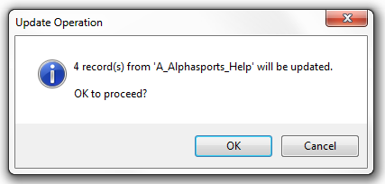
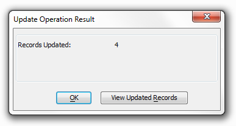

Prompting for Confirmation
When you run an Operation, Alpha Anywhere displays a dialog box telling you how many records will be processed by the Operation. At this point, you can abort the Operation. For example, when performing an Update Operation, Alpha Anywhere will display this dialog box:

You can set a preference in View > Settings > Preferences > Operations to turn off the confirmation dialogs for operations.
Display Results after Operation Completes
After an Operation has run, the confirmation dialog that Alpha Anywhere displays includes a button that lets you view the results of the Operation. For example, after an Export Operation, the confirmation dialog lets you open the file created by the Export. After an Update Operation has run, the confirmation dialog lets you browse the table that was just updated.
